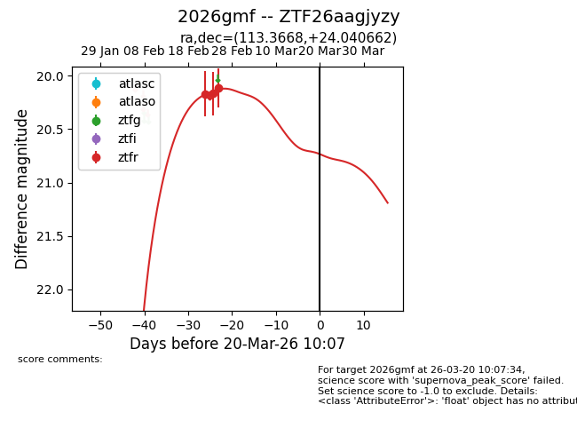
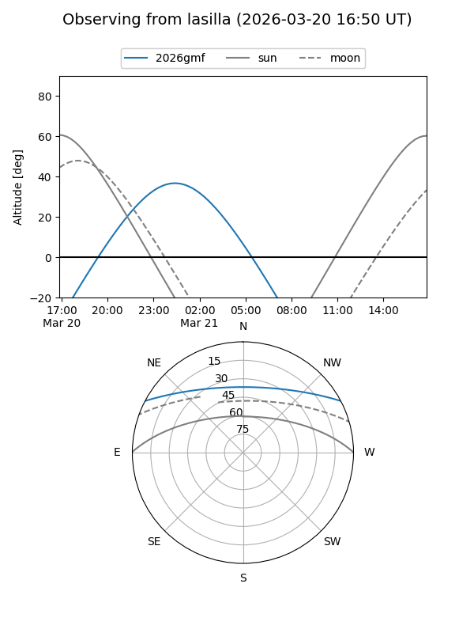
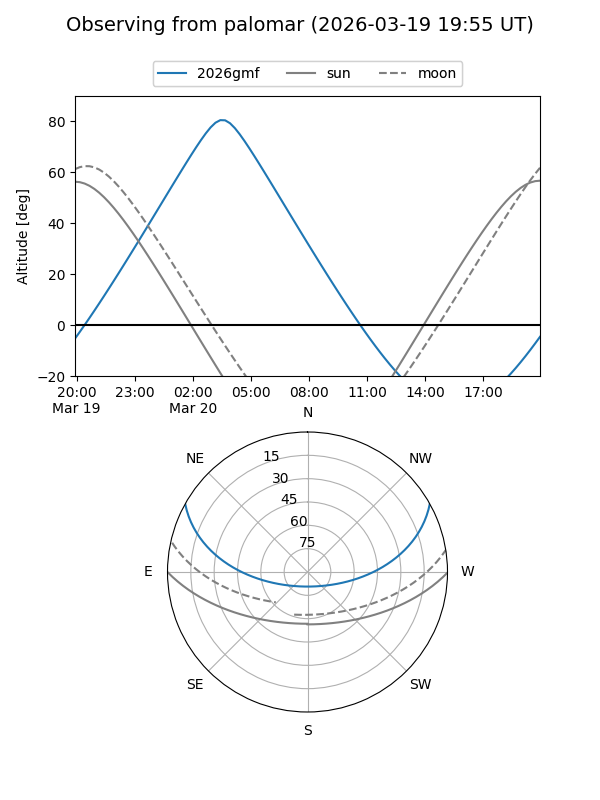
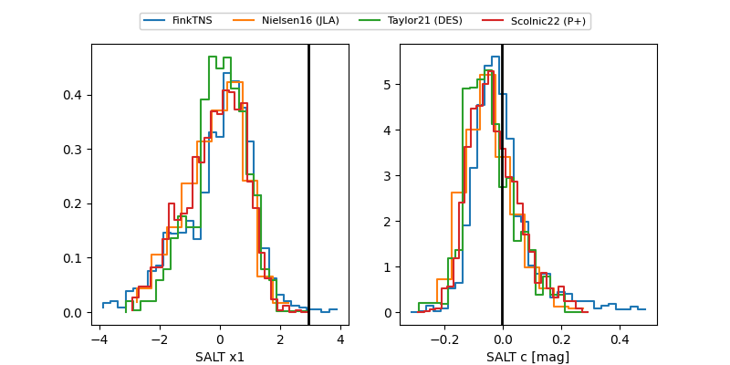

2026gmf
Target 2026gmf at 2026-03-20 10:09
Aliases and brokers:
FINK: link
Lasair: link
ALeRCE: link
TNS: link
YSE: link
alt names
ZTF26aagjyzy (ztf,fink_ztf)
2026gmf (tns,yse)
Coordinates:
equatorial (ra, dec) = 113.3668,+24.04066
equatorial (HMS+DMS) = 07:33:28.03,+24:02:26.38
galactic (l, b) = (195.2286,+19.51062)
Flags:
Photometry:
last ztfr=20.12
3 ztfr detections
Lightcurve

Visibility


Additional plots
